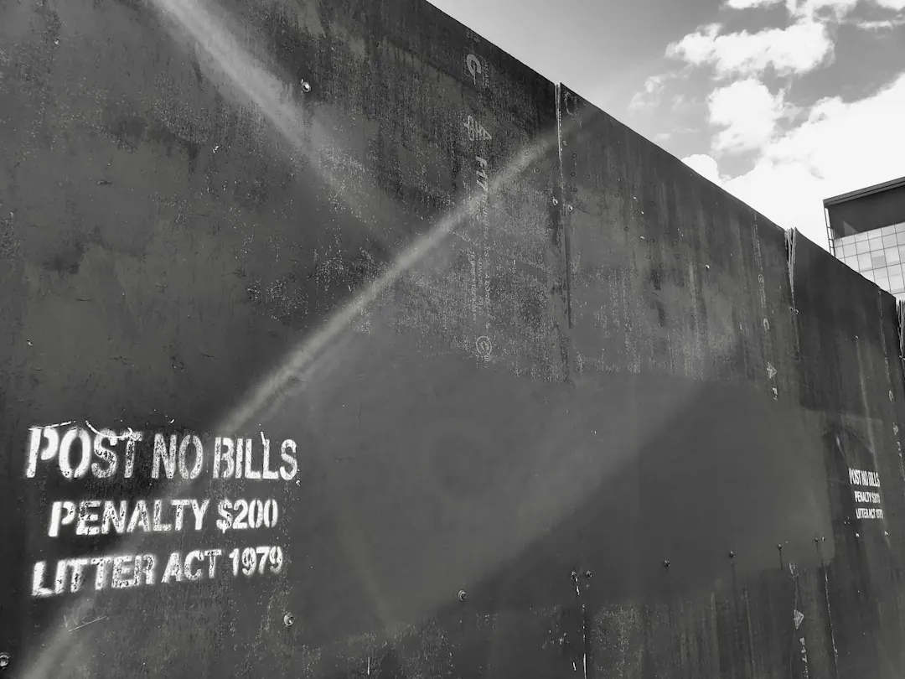

A useful retaining-wall quote should identify the wall system, dimensions, access, excavation, spoil removal, drainage, engineering, approvals, backfill, restoration and GST. Retaining Wall Pros publishes 17 location guides covering all six Australian states and both mainland territories. Before comparing totals, prepare approximate length, retained heights, site photos, access details and known water issues, then check the relevant local authority source for the property.
When comparing retaining wall quotes australia-wide, the practical focus is not a single metre rate but the complete installed scope, site constraints and approval questions behind each price.
Retaining Wall Quotes Australia Explained
Retaining Wall Pros frames quote preparation around the work behind the visible wall. Two totals can differ because one includes drainage, excavation, spoil removal and restoration while another prices only the facing. Ask each provider to identify the same work items before treating the totals as comparable.
The brief should describe the approximate length, highest and lowest retained heights, slope, nearby structures and intended use of the space. A driveway, building or another terrace above the wall can create a different approval or design question from a garden edge, so the quote needs to acknowledge what the wall is retaining and what sits around it.
- Confirm whether excavation, spoil removal, footing work and backfill are included.
- Ask how drainage collection, filtration and lawful discharge are allowed for.
- Check whether engineering, permits, restoration and GST appear in the stated scope.
- Record exclusions rather than assuming an unclear item is included.
For a Brisbane-focused comparison, the separate guide to retaining wall quotes in Brisbane can be used alongside the broader Australian checklist.
Choose a system that suits the site
Material selection should follow the site brief rather than lead it. Concrete sleeper systems with steel posts may suit garden, boundary and structural projects where access, drainage and approval needs are considered. Timber sleepers can suit garden and terraced applications, with exposure, drainage and maintenance questions included in the discussion.
Core-filled reinforced block systems may be considered where footing, drainage and structural design require attention. Rock, boulder and sandstone walls use more footprint and may bring questions about batter, access, drainage and the surrounding landscape. Gabions are another system to compare, but the quote should still explain the foundation, fill, drainage and finishing assumptions.
| Decision | What to ask | Why it affects the quote |
|---|---|---|
| Material | Which system is proposed? | Systems have different footing, reinforcement, footprint and finish requirements. |
| Site fit | How will access and slope affect the work? | Equipment movement, excavation and spoil handling may change the installed scope. |
| Water | Where will collected water go? | Drainage design and lawful discharge need to be addressed with the property context. |
Treat drainage and approval as quote items
Water should be discussed before a wall system is selected. The preparation checklist published by Retaining Wall Pros asks for ponding, outlets, erosion, staining and known stormwater connections. These details help a provider understand whether the project includes a drainage or water issue rather than only a replacement of the visible wall.
Approval cannot be settled by applying one national height rule. The published guidance notes that the answer can change with the address, a driveway, building, upper terrace, pool, boundary or the destination of collected water. Open the relevant council or government source for the property and ask the provider which approval pathway, engineering input or documentation applies.
Include these questions in writing:
- Does the proposed height or location trigger a local approval check?
- Are nearby structures, boundaries or additional loads part of the assessment?
- How will water be collected, filtered and discharged?
- Who is responsible for obtaining or supplying any required design information?
Prepare evidence before requesting prices
A clear enquiry reduces the amount of guesswork in an early quote. The online request process asks for four essentials: first name, location or postcode, project need and preferred contact method. Optional details can then add the likely material, timing, approximate length, retained height, access or drainage constraints.
Photographs should show the wall line, slope, top, bottom and nearby structures. Note gate width, stairs, side access and where equipment or spoil could move. If the existing wall needs attention, describe cracking, movement, leaning, drainage symptoms or other visible changes without assuming the cause. A repair or replacement enquiry needs a different starting point from a new wall.
Timing can be recorded as researching options, within one to three months, within three to six months, or an existing wall needing attention. These are enquiry categories, not promises of availability. Leave unknown fields blank rather than adding a confident measurement that has not been checked.
Who this guide applies to
This guide suits homeowners, renovators, property managers and other people preparing a new wall, repair, replacement, drainage project or terraced garden. It is also relevant when comparing concrete sleepers, timber, reinforced block, natural rock, sandstone or gabion options and when a boundary, pool, driveway or upper structure creates an approval question.
It is less useful as a substitute for a site inspection, engineering advice or a current council decision. The useful next step is to assemble the dimensions, photos, access notes and water observations, then ask providers to price the same defined scope. Compare exclusions and responsibilities as carefully as the headline total.
- Describe the wall. Record the approximate length, highest and lowest retained heights, slope and nearby structures.
- Document the site. Add photographs showing the wall line, access route, top, bottom, water signs and surrounding structures.
- Define the system. Identify the materials worth comparing and ask how footing, drainage, reinforcement and finish affect the scope.
- Check local requirements. Use the relevant council or government source for the address and raise approval or engineering questions before accepting a quote.
- Compare like with like. Review inclusions, exclusions, GST, drainage, excavation, disposal, restoration and responsibility for design information.
| Quote area | Evidence to provide | Question to resolve |
|---|---|---|
| Dimensions | Approximate length and highest and lowest retained heights | Are the measurements sufficient for an initial scope? |
| Access | Gate width, stairs, side access and equipment route | Is excavation, equipment movement or spoil handling restricted? |
| Drainage | Ponding, outlets, erosion, staining and stormwater connections | What collection and discharge work is included? |
| Approval | Address, boundary, pool, driveway, building or upper terrace | Which current local authority source should be checked? |
Common questions
What should a retaining-wall quote include? It should identify the wall system and dimensions, then explain excavation, access, spoil removal, drainage, engineering, approvals, backfill, restoration, exclusions and GST where relevant. Comparing the same scope is more useful than comparing a bare metre rate.
Is a low retaining wall automatically exempt from approval? Not necessarily. The relevant answer depends on the property and surrounding conditions, including a driveway, building, upper terrace, pool, boundary or water destination. Check the current council or government source for the address.
Which details improve an initial enquiry? Provide the location or postcode, project need and preferred contact method, then add approximate length, retained height, material preference, timing, access constraints, drainage observations and photographs if available.
Should an existing wall be repaired or replaced? That depends on its condition, site context and the scope a provider can confirm. Describe the visible issue and ask whether the enquiry should be assessed as repair, replacement or a drainage-related project.
This guide covers retaining-wall quote preparation, system comparisons, drainage, local approval questions and like-for-like scope checks across Australia.